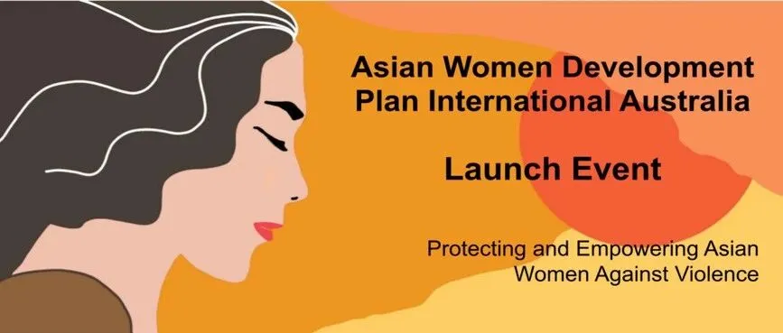
2025年11月29日（星期六），AWDPI Australia（亚洲女性国际发展计划澳大利亚国家办公室） 将在墨尔本举行启动典礼，并同步发布由 AWDPI 澳大利亚法律支持团队撰写的《You Are Not Alone》反家暴支持手册，以及举办跨部门反家暴圆桌论坛。
本次活动将汇聚 澳洲联邦政府、维州政府、市政机构、多元文化社区领袖、法律与心理健康专家、维州警察代表以及跨文化倡导者，共同探讨如何进一步保护、支持并赋权在澳亚裔女性。
这不仅是一场启动典礼，更是一场由多领域共同参与、以“女性安全与赋权”为核心的跨文化公共对话。
为便于公众更全面地了解本次活动的整体安排，AWDPI Australia 现正式公布启动典礼的全流程（Final Run Sheet）及嘉宾阵容海报（Speakers Lineup）。
我们诚挚邀请您参与这一重要时刻！
1
活动信息
INFORMATION
「活动时间」
2025 年 11 月 29 日（周六）
线下活动时间（墨尔本/悉尼）
🕒11:00 – 15:00
（座位有限，仅开放 30 个公众席位；需提前报名，活动现场将核对报名信息）
线上直播时间
🕒11:30 – 14:05（墨尔本/悉尼）
🕒09:30 – 11:05（北京时间）
「活动形式」
线下 + 线上同步
活动主要以英文进行，并提供中英双语实时字幕支持。
线下地点
🏛 Museum of Chinese Australian History 澳华历史博物馆
线上平台
💻 Zoom（报名成功后将收到参会链接）
📍 报名方式
🔗 Eventbrite 报名链接：

扫描上方二维码
或者点击文章结尾“阅读原文”
即可报名
线上线下均在eventbrite上面报名
（需提前注册，席位有限）
🤝如有任何疑问，请添加 AWDPI Australia 小助手，获取活动提醒、入群信息等
2
活动亮点
HIGHLIGHTS
AWDPI Australia 正式启动，发布 2026 年方向与重点
AWDPI Australia 反家暴手册《You Are Not Alone》首发
-
澳洲政府代表及多领域领袖出席与支持
跨部门圆桌讨论：法律、警务、学术、多元文化社区共同参与
媒体采访区、嘉宾合影区、双语志愿者团队、现场扫码 Q&A
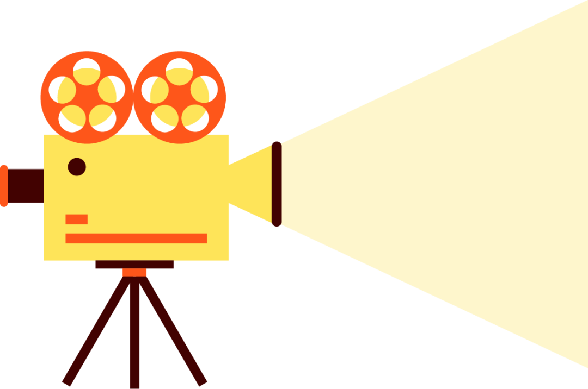
启动典礼流程（Run Sheet）
作为一个致力于支持和赋能亚裔女性的平台，AWDPI澳大利亚启动典礼汇集了来自社区和各界的声音，旨在提高公众意识，促进合作，并加强集体努力，以预防家庭暴力和性暴力。通过演讲、圆桌会议和社区互动，这次重要的聚会旨在激发行动，促进安全与平等，并为在澳大利亚的亚裔女性及社区构建一个更具包容性和韧性的社会贡献力量。
中文版日程
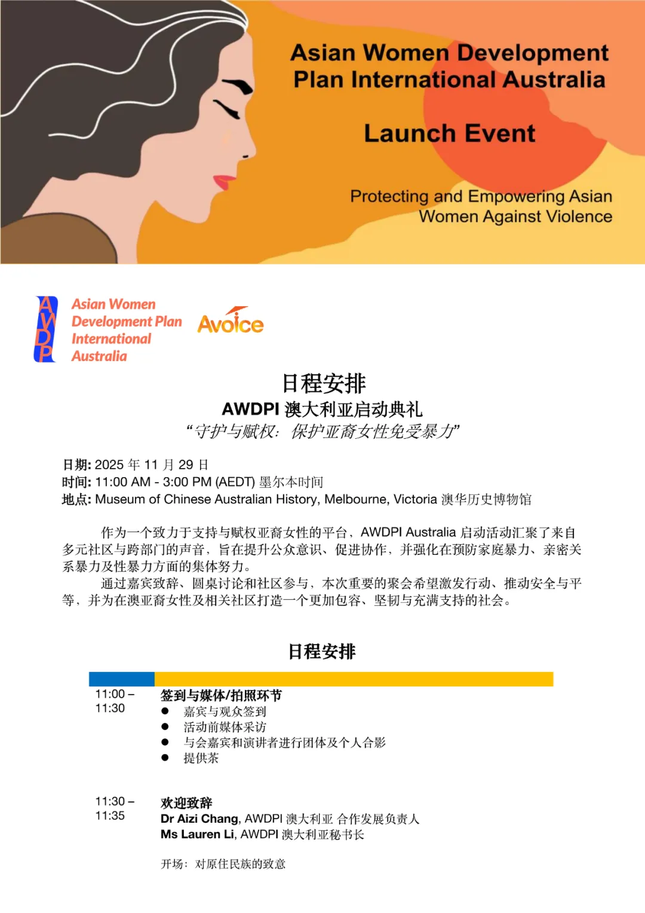
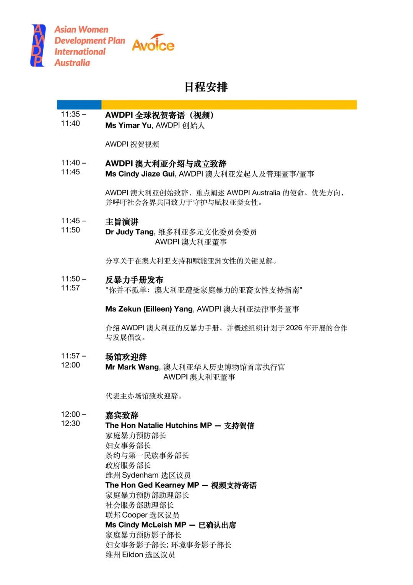
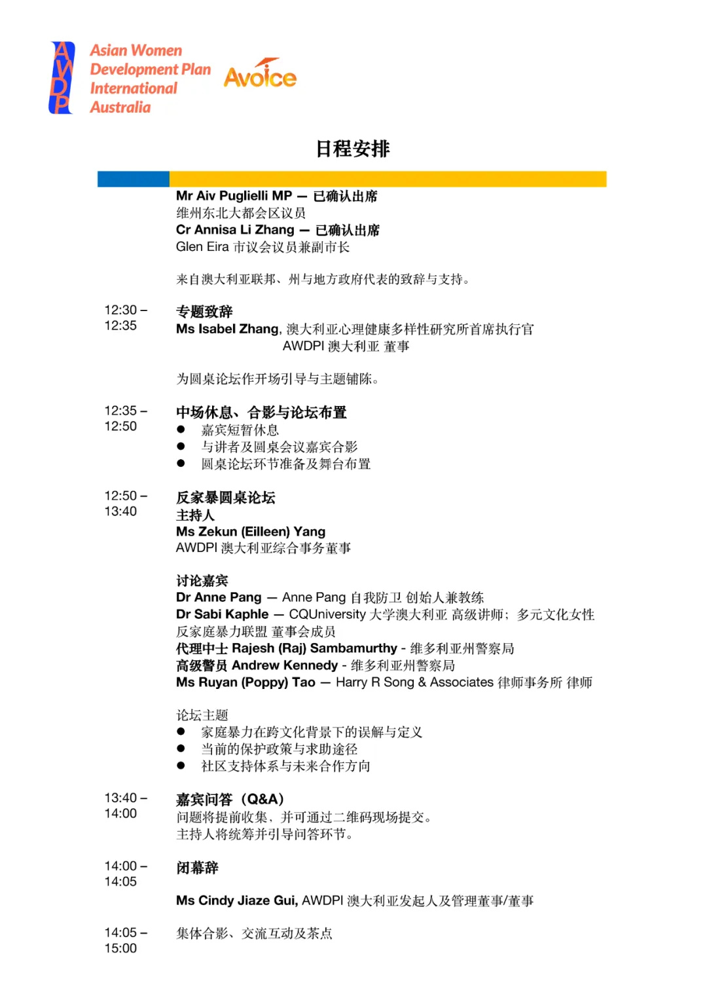
Launch Event
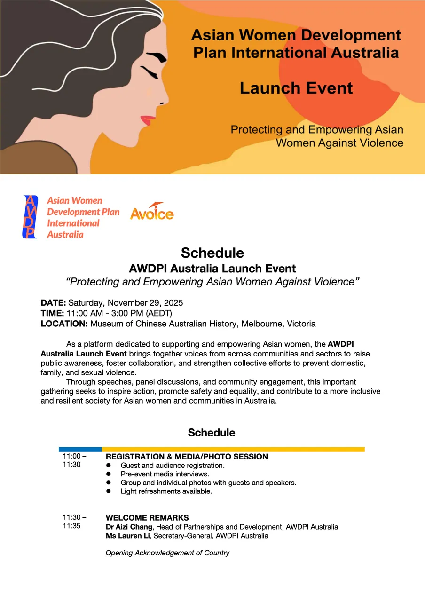
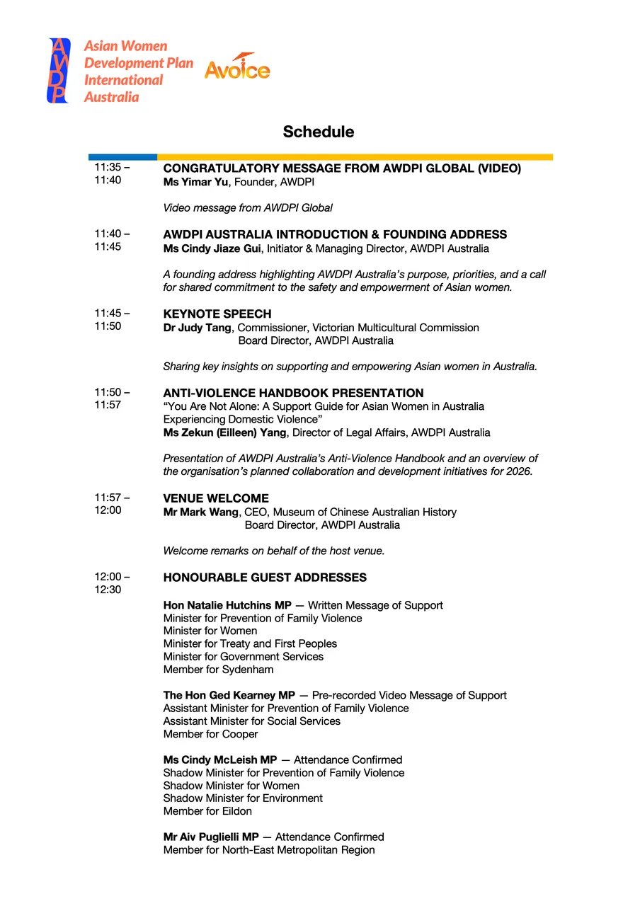
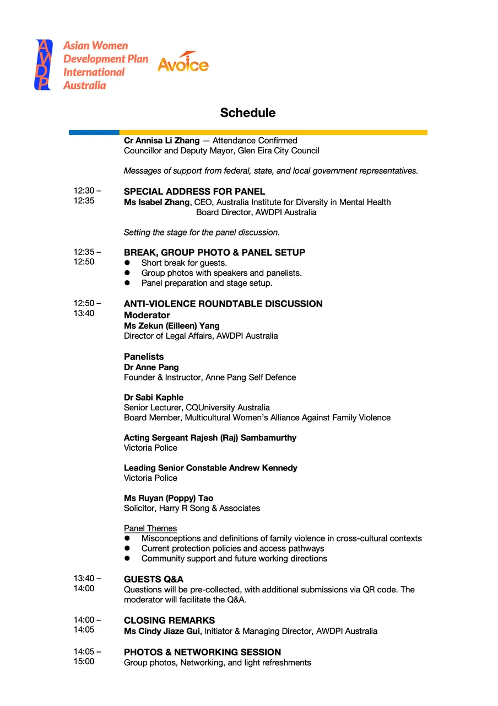
3
嘉宾介绍（按出场顺序）
Speakers Lineup
以下为本次 AWDPI Australia 启动典礼的嘉宾阵容，按照活动当天的实际出场顺序排列。
欢迎致辞
WELCOME REMARKS
「主持人 Dr Aizi Chang」
- 亚裔女性国际发展计划（AWDPI）澳大利亚合作与发展负责人
Aizi Chang是一位专注于传播与媒体研究的学者，她的研究领域涵盖中国女性主义行动、数字审查机制以及平台文化等方向。她目前任教于莫纳什大学媒体、电影与新闻学院。在担任 AWDPI 澳大利亚国家办公室的合作与发展负责人期间，她致力于通过与澳大利亚各大高校建立战略合作关系，推动组织在性别平等与女性赋权领域的影响力持续扩大。
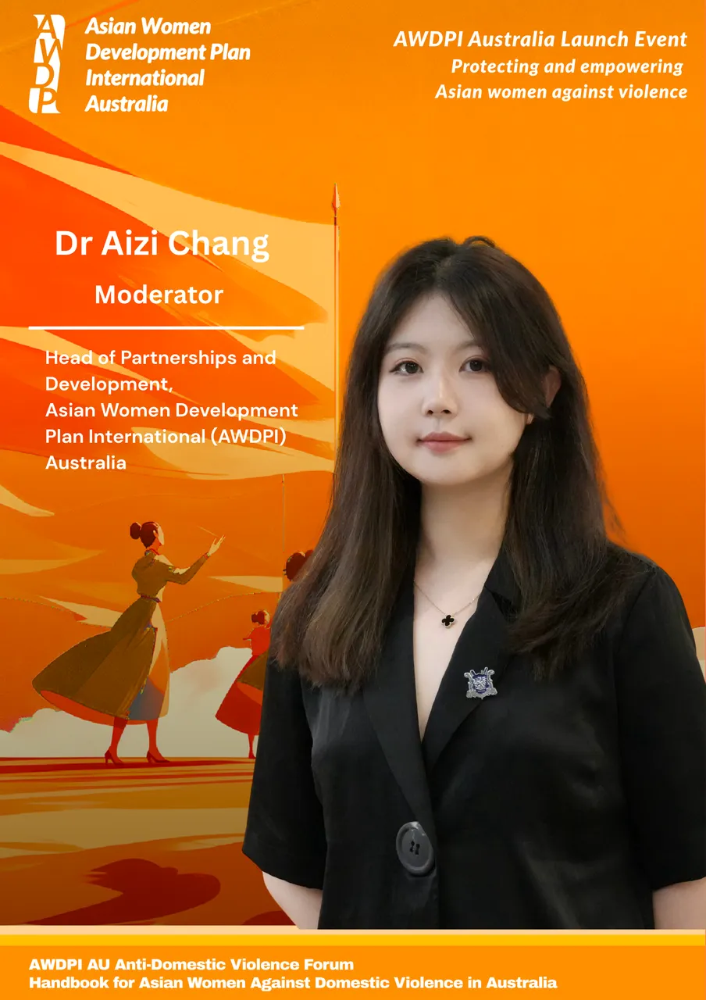
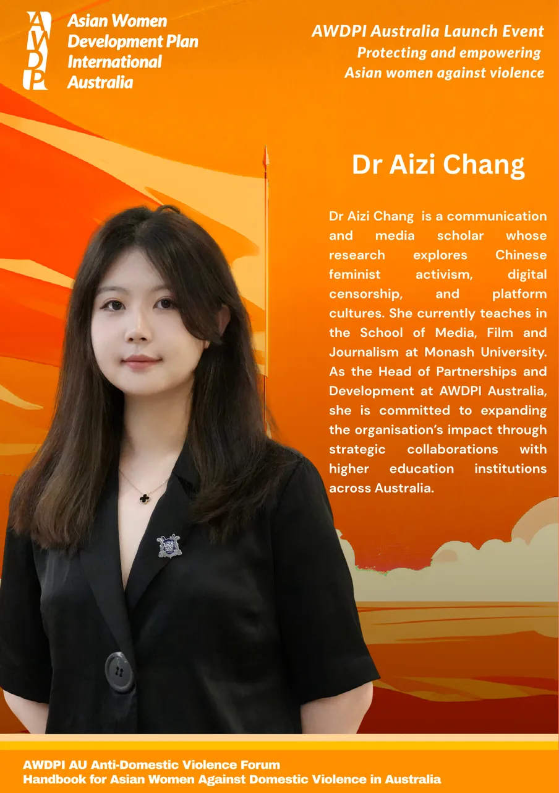
「主持人 Ms. Rong（Lauren）Li」
亚裔女性国际发展计划（AWDPI）澳大利亚秘书长
Rong（Lauren）Li 是现任 AWDPI 澳大利亚国家办公室秘书长，负责组织的行政运营、内部沟通及治理体系建设。她拥有莫纳什大学理学学士学位，以及墨尔本大学生物医学荣誉学士学位，专业方向为肽化学与药理学研究。作为一名卓有成就的科研工作者，她以第一作者和合作者身份发表了多篇 Q1 区高水平期刊论文。因其突出的学术表现与研究潜力，她获授莫纳什大学研究生科研培训项目（RTP）奖学金，开展结构生物学与分子生物学方向的博士研究。
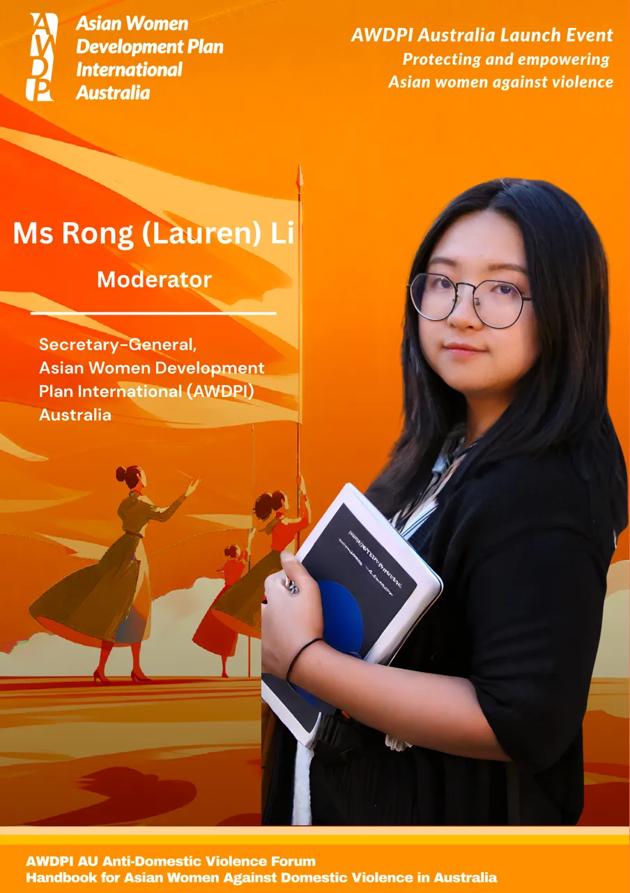
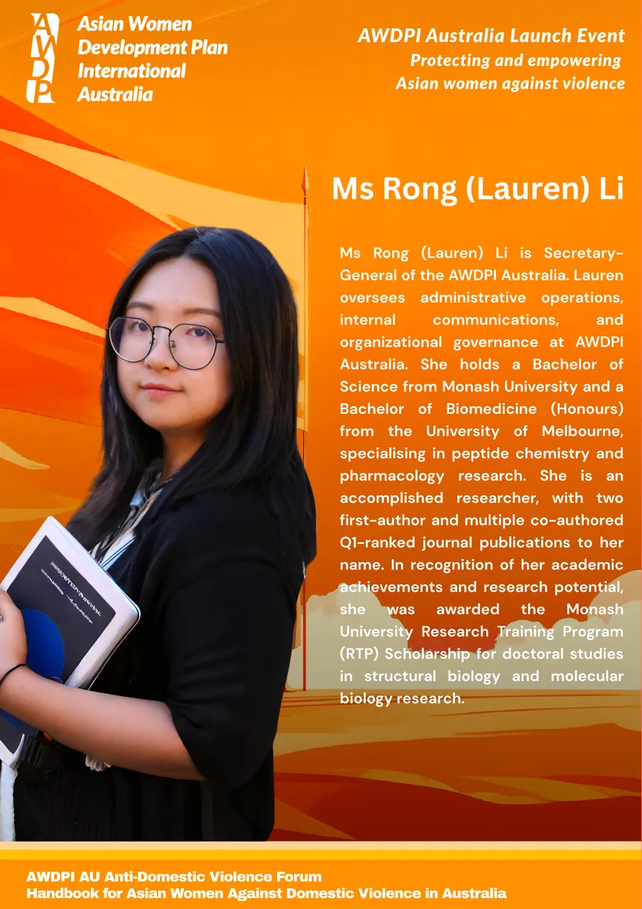
AWDPI创始人贺词
CONGRATULATORY MESSAGE
FROM AWDPI GLOBAL (VIDEO)
「Ms Yimar Yu」
亚裔女性国际发展计划（AWDPI）创始人
Yimar Yu是 AWDPI 亚裔女性国际发展计划的创始人，也是长期致力于女性安全、发展与跨国支持体系建设的公共政策实践者。她长期关注性别、迁徙与社会发展议题，致力于为遭受暴力、歧视和边缘化的女性强化支持与保护体系。目前同时作为哈佛大学肯尼迪学院公共政策硕士学生，她的研究方向涵盖性别数据、全球治理以及以社区为中心的社会变革方法，并延伸至性别与气候变化、公共健康、数字环境和经济机会等跨领域的交叉议题。她的工作强调同理心、跨界协作与基于证据的倡导，以及对多元处境女性的包容性支持。Yimar 推动提升边缘性群体的声音，并推动创建一个让每位女性都能享有安全、尊重与成长机会的社会环境。
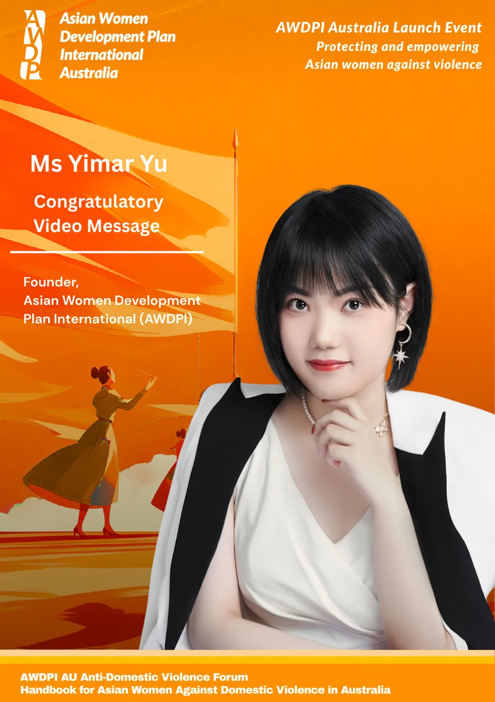
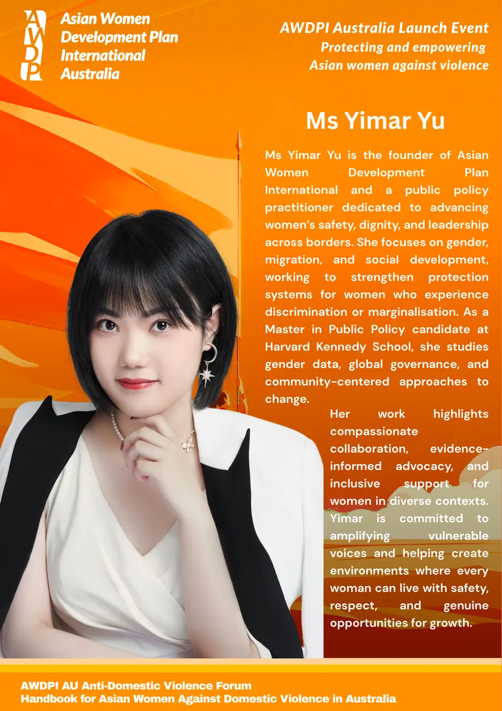
AWDPI Australia
创始致辞与愿景发布
AWDPI AUSTRALIA INTRODUCTION
& FOUNDING ADDRESS
「Ms Cindy Jiaze Gui」
亚裔女性国际发展计划（AWDPI）澳大利亚发起人及管理董事/董事
Cindy Jiaze Gui是AWDPI澳大利亚国家办公室的发起人及管理董事/董事。她致力于推动澳大利亚社会更加多元、公平与包容，让亚裔女性及其他弱势、代表性不足的群体获得充分发展、自主发声并参与社会建设的机会。她拥有哈佛大学硕士学位，专注于构建具有文化敏感性的支持与服务路径，提升女性在安全保障、权益维护与社区参与方面的可及性与主动性，进而促进更具韧性、更包容的社会生态。她的核心关注领域包括女性赋权、教育政策、科技创新及国际发展。同时，她在多个全球青年组织担任领袖，并曾任哈佛国际发展中心大使（Ambassador），积极推动跨文化、跨领域的合作与社会倡议。
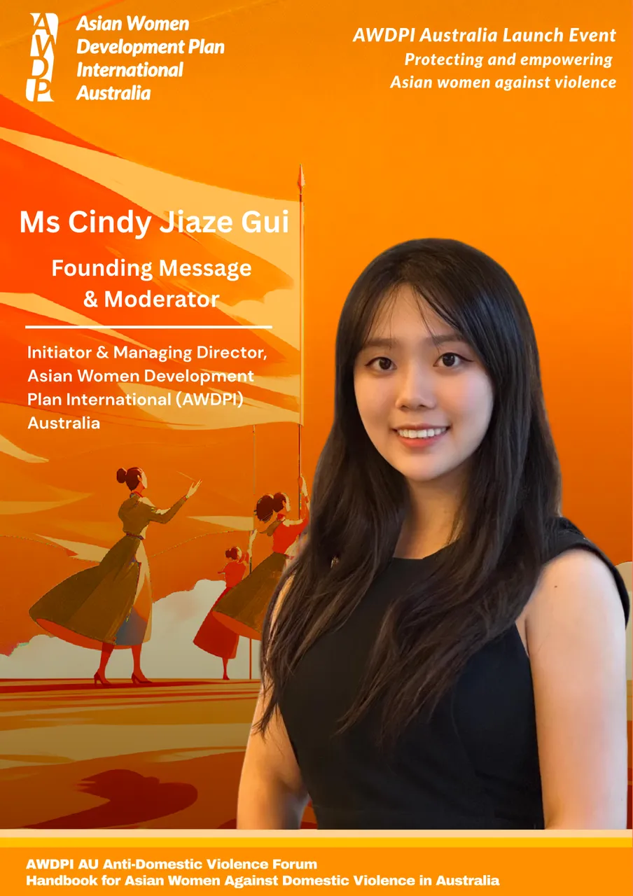
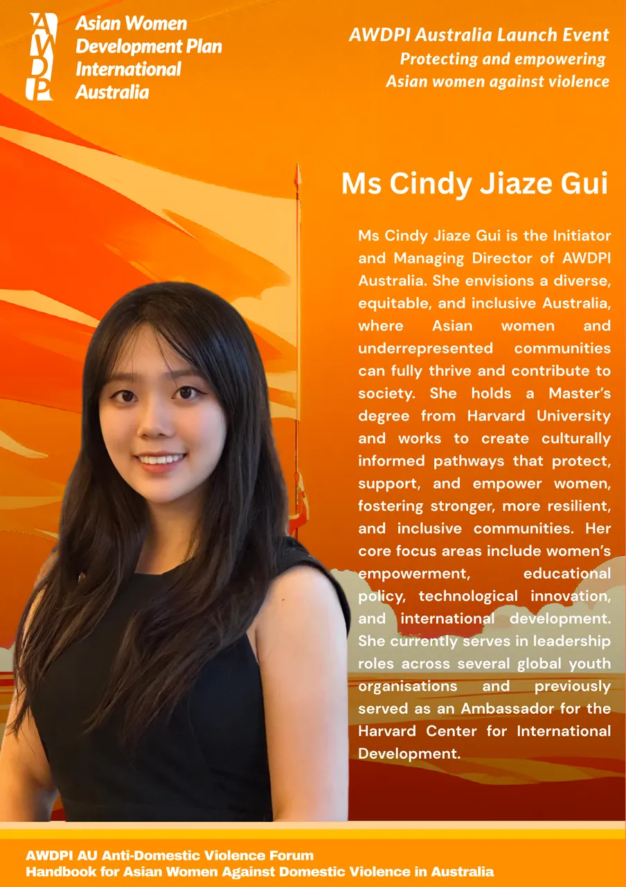
主旨演讲
KEYNOTE SPEECH
「主旨演讲嘉宾 Dr Judy Tang」
维多利亚州多元文化委员会委员
亚裔女性国际发展计划（AWDPI）澳大利亚董事
维多利亚骄傲中心（Victorian Pride Centre）董事
临床神经心理学家
Judy Tang是一位临床神经心理学家，同时也是致力于推动文化多元社会发展的积极倡导者。她深刻理解文化背景与心理健康、创伤及暴力经历之间的交织关系，并将此转化为推动系统改进与社区赋权的重要力量。她长期致力于支持来自不同文化背景的群体，帮助他们在面对个人或制度性挑战时更有能力获取应有的法律保障及社会支持。Judy现任维多利亚州多元文化委员会委员，并在多家心理健康与社区组织担任董事职务，持续推动更包容、更具文化敏感性的公共服务与社会环境。
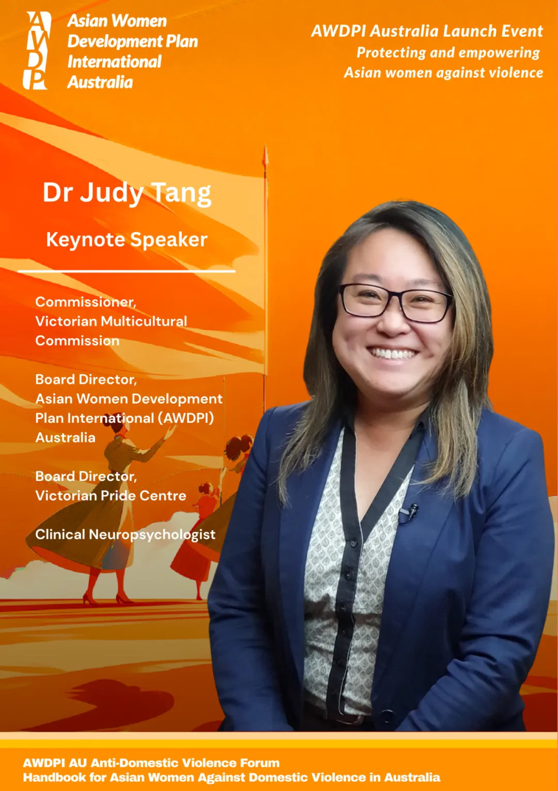
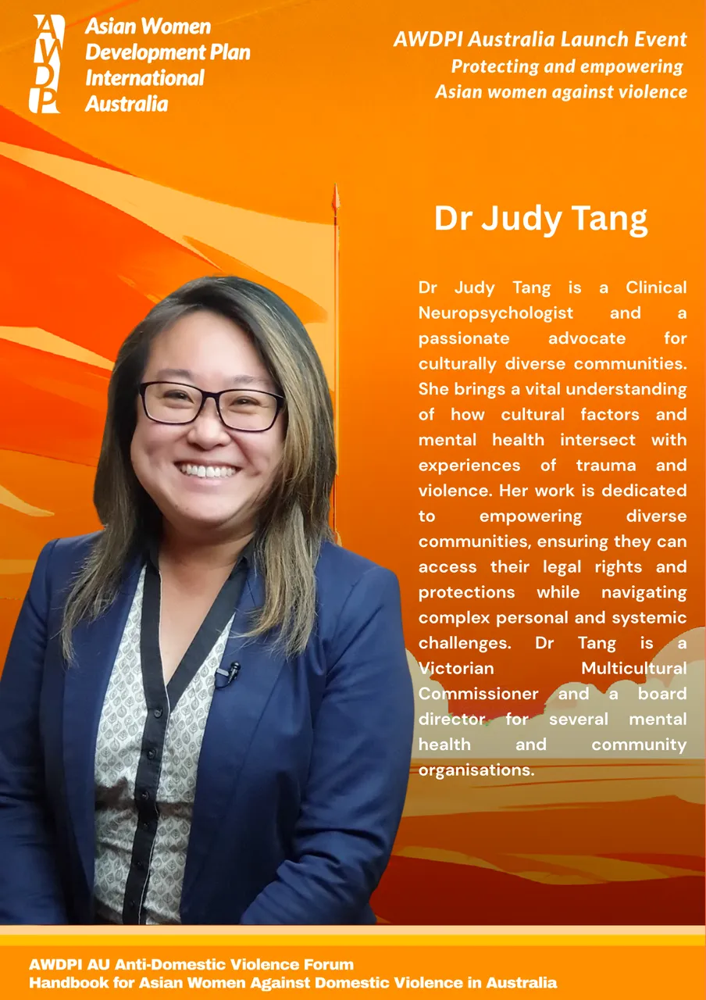
《You Are Not Alone》反家暴手册发布与圆桌会议主持
ANTI-VIOLENCE HANDBOOK PRESENTATION
「圆桌主持 Ms Zekun (Eilleen) Yang」
亚裔女性国际发展计划（AWDPI）澳大利亚法律事务董事
Zekun (Eilleen) Yang是现任 AWDPI 澳大利亚国家办公室法律事务董事，负责组织的法律策略与治理框架，致力于提升亚裔女性的安全保障与权利保护。她已在新南威尔士州取得律师执业资格，并持有中国法律职业资格证书。Eilleen 在非营利领域拥有超过五年的从业经验，主要涉及法律咨询、合规管理、政策制定，以及面向员工和社区合作伙伴的培训，其工作始终强调权利维护与风险管理。在专业实践之外，她积极参与社区法律教育与倡导工作，致力于为多元文化群体打造可获得、具创伤知情且文化安全的司法途径，推动更公平且包容的司法环境。
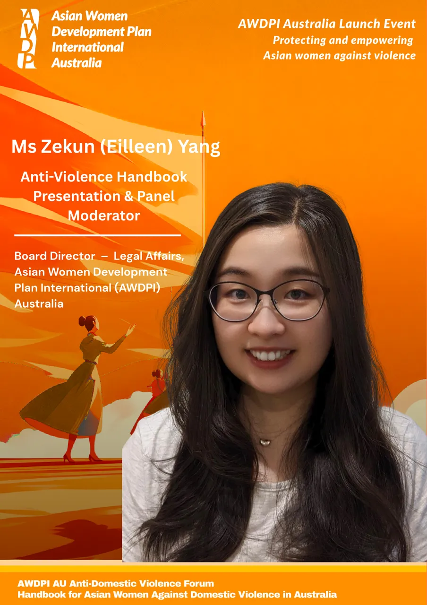
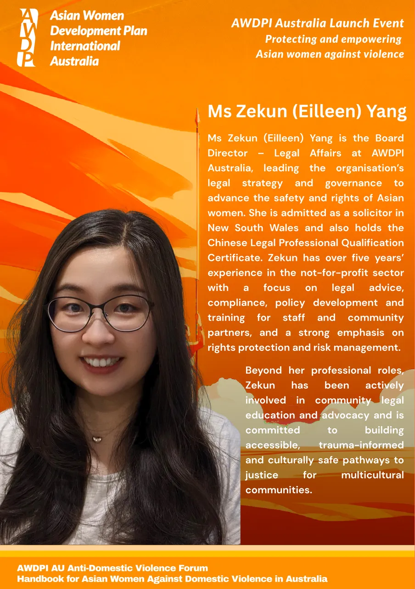
场地方欢迎致辞
VENUE WELCOME
「Mr Mark Wang」
澳大利亚华人历史博物馆首席执行官
亚裔女性国际发展计划（AWDPI）澳大利亚董事
Mark Wang是第五代澳籍华人，对近两百年来来自亚洲不同地区、移居澳大利亚的华人社群在社会与文化层面的历史发展拥有深刻而广阔的视野。他是澳大利亚华人历史博物馆的创始成员之一，并自 1985 年博物馆成立以来担任现任首席执行官。澳大利亚华人历史博物馆长期致力于推动社会和谐、相互尊重与文化多元价值的传播。作为社区历史与文化的重要守护者，王先生在跨文化理解与社区建设方面发挥着关键作用。
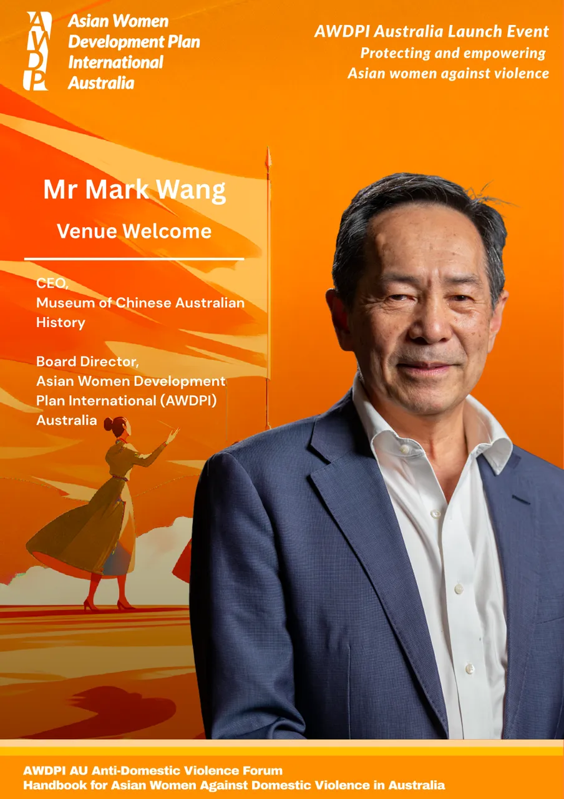
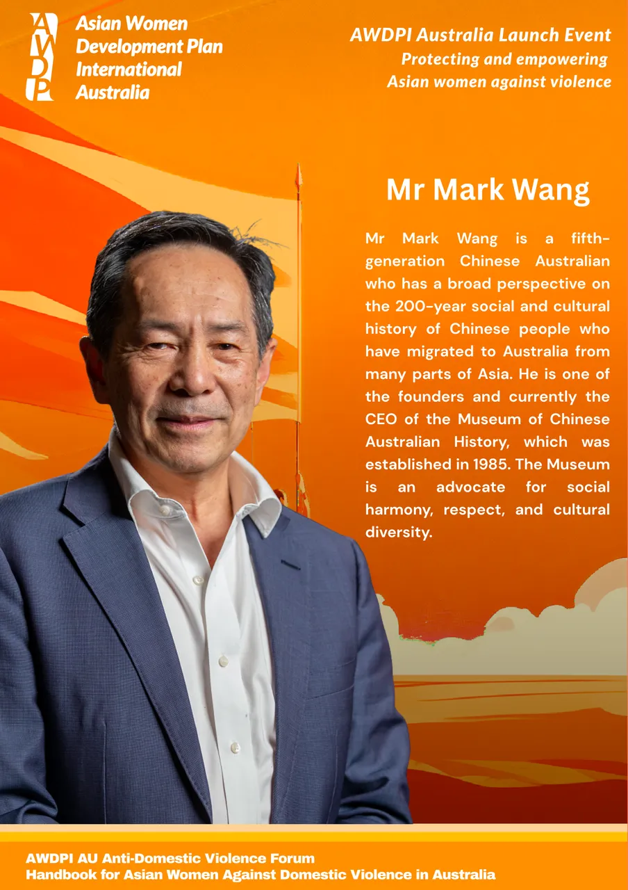
政府代表寄语
HONOURABLE GUEST ADDRESSES FROM GOVERNMENT REPRESENTATIVES
Hon Natalie Hutchins MP（书面支持）
「尊敬的Hon Natalie Hutchins议员」
维多利亚州家庭暴力预防部长
维多利亚州妇女事务部长
维多利亚州政府服务部长
维多利亚州条约与第一民族事务部长
维多利亚州议会西登纳姆选区议员
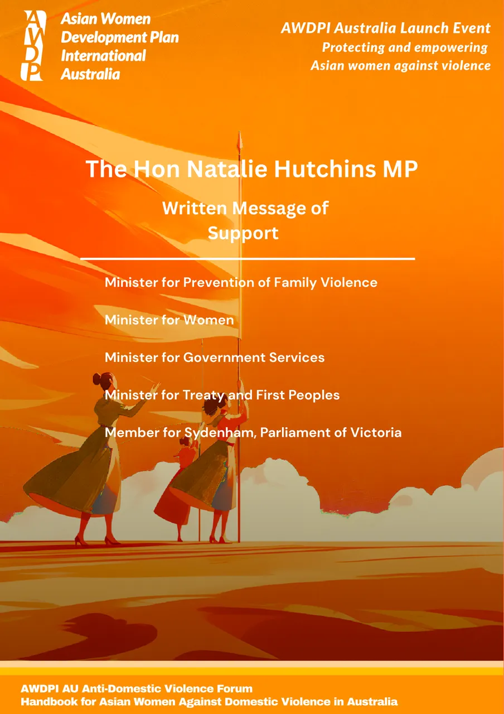
The Hon Ged Kearney MP（视频支持）
「尊敬的Hon Ged Kearney议员」
澳大利亚家庭暴力预防助理部长
澳大利亚社会服务助理部长
澳大利亚联邦议会库珀选区议员
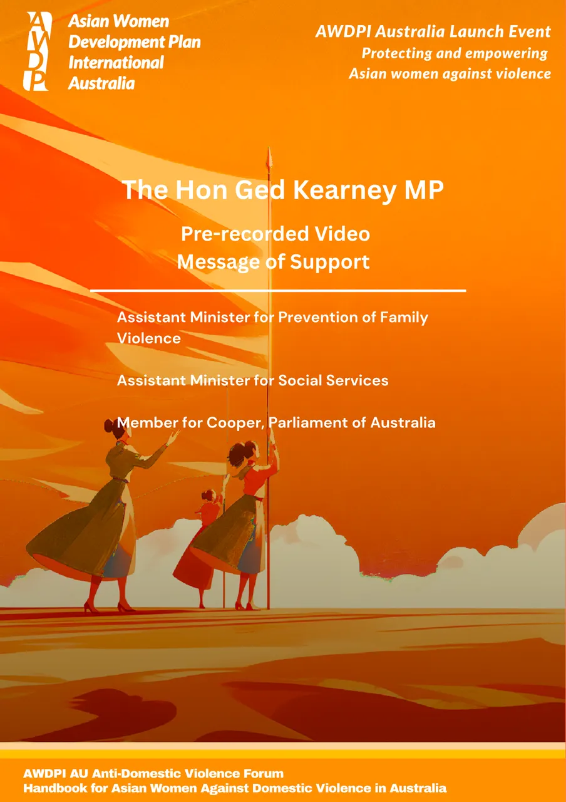
Ms Cindy McLeish MP（现场出席）
「尊敬的Cindy McLeish议员」
维多利亚州议会反家庭暴力影子部长
维多利亚州议会妇女事务影子部长
维多利亚州议会环境事务影子部长
维多利亚州议会艾尔登选区议员
Cindy McLeish是现任维多利亚州议会艾尔登选区议员，并担任自由党反家庭暴力、妇女事务及环境事务影子部长。她曾任多项影子内阁职务，包括工伤保险及交通事故委员会（Workcover 和 TAC）、教育、小企业、旅游及犯罪预防等领域。在进入议会之前，Cindy曾担任管理顾问，专注于组织发展、领导力、组织效能及变革管理，服务对象涵盖金融、医疗、采矿和建筑等多个行业，包括大型国企、跨国公司、公共部门及中小型家族企业。她的职业生涯起步于中学科学教师，后取得心理学注册资格并进入辅助医疗行业。Cindy曾在工伤保险机构（WorkCover）工作十年，担任体育组织首席执行官，并曾任高尔夫维多利亚董事六年，积累了丰富的管理与社区服务经验。
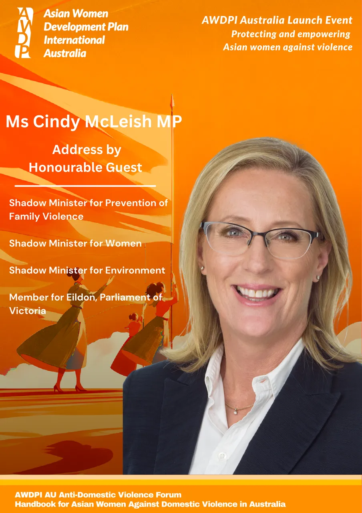
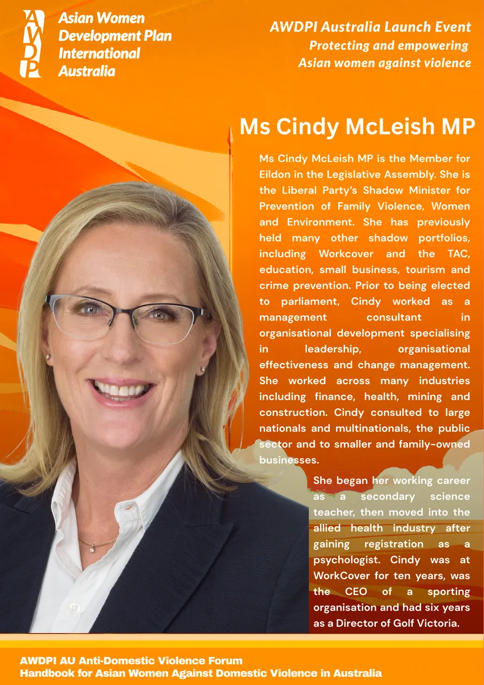
Mr Aiv Puglielli MP（现场出席）
「尊敬的Aiv Puglielli议员」
维多利亚州议会东北大都会区议员
Aiv Puglielli是一位意裔澳大利亚青年、LGBTQIA+ 艺术家，同时也是维多利亚州议会东北大都会区的绿党议员。他在墨尔本东北部的 Eltham 长大，在进入议会之前，长期以艺术家、作曲家和制作人的身份活跃于澳大利亚独立艺术界。Aiv 的艺术创作一向带有鲜明的进步主义政治色彩。然而在疫情期间，当艺术行业几乎在一夜之间停摆，他亲眼见证了众多艺术家与文化从业者被迫自谋生路，而政府在结构性和社会性支持上的不足造成了深远的冲击。这一经历促使他加入绿党并投身政治。作为议员，他关注多项紧迫的社会议题，包括气候危机、社会不平等与住房可负担性等，但他尤其对影响年轻人的议题投入深厚热情，致力推动更具公正性与可持续性的政策变革。
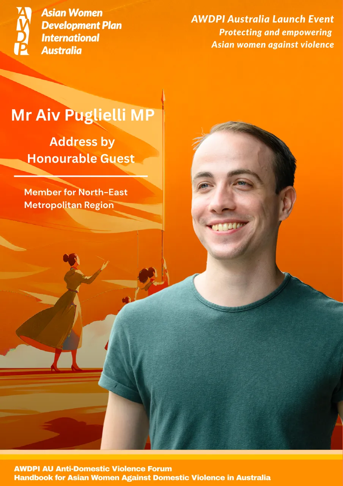
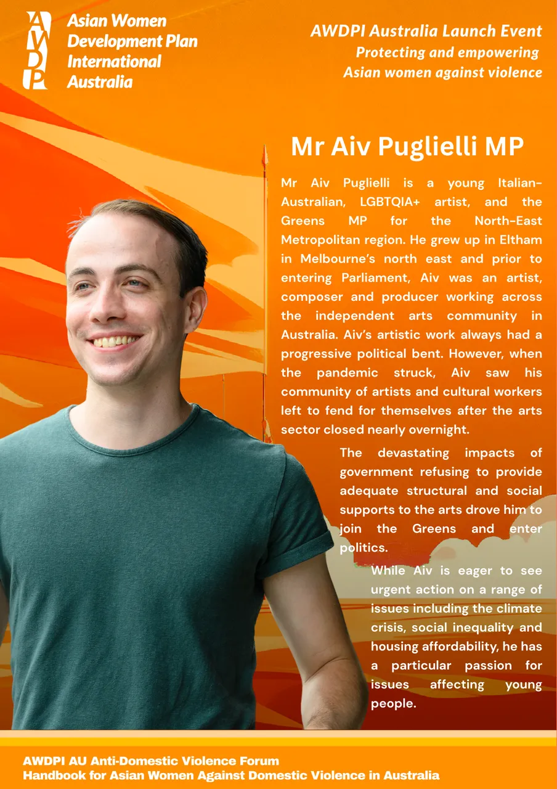
Cr Annisa Li Zhang（现场出席）
「尊敬的Annisa Li Zhang议员」
维多利亚州格兰艾拉市（Glen Eira）市议员及副市长
维多利亚州市政协会（MAV）董事
亚裔领导力基金会主席
Annisa Li Zhang是现任维多利亚州格兰艾拉市议员及副市长，正处于其第二个任期。她于 2020 年首次当选，并于 2024 年成功连任。同时，她也是维多利亚州市政协会董事会成员。Annisa 创立了亚裔领导力基金会，专注推动亚裔澳大利亚人在政治、政府与公共部门的参与与代表性。她亦创立了墨尔本“龙”足球俱乐部，这是首个遵循 AFL Nine 规则的华裔澳大利亚社区足球队。作为作者，她的写作关注社会正义、日常生活与文化身份等议题。因其对多元文化社区的杰出贡献，Annisa 在 2024 年荣获“维多利亚州多元文化卓越奖”，并入选“维多利亚州多元文化荣誉榜”。她拥有墨尔本大学 MBA 学位，并能熟练使用普通话、英语和日语。在专业工作之外，Annisa 热爱澳式足球、徒步、阅读与烹饪，积极拥抱多元兴趣。
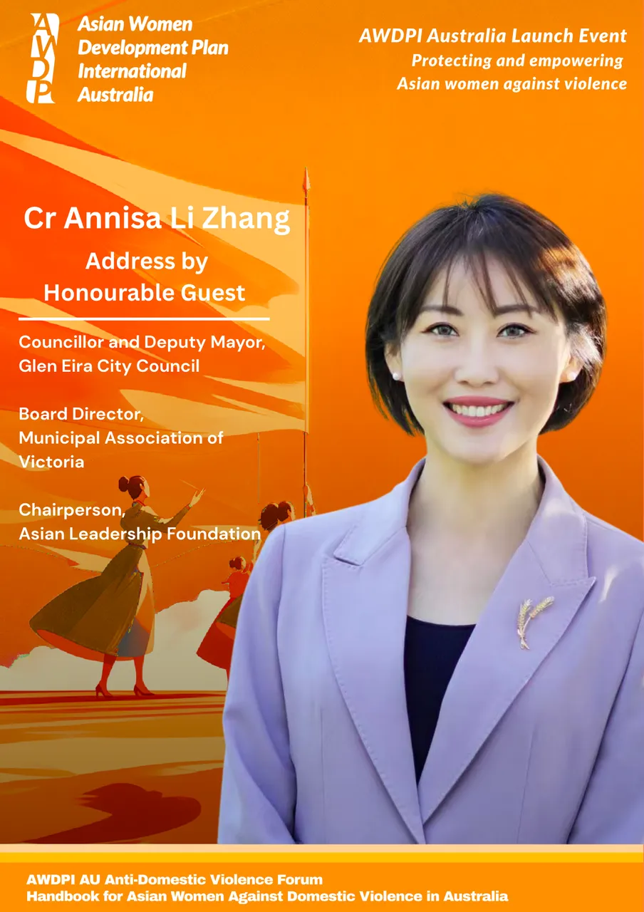
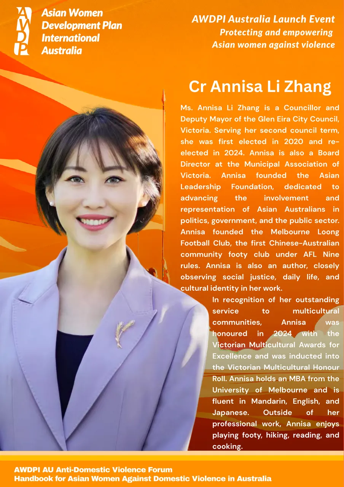
特别致辞 — 圆桌论坛引言
SPECIAL ADDRESS FOR PANEL
「Ms Isabel Zhang」
澳大利亚多元心理健康研究院首席执行官
亚裔女性国际发展计划（AWDPI）澳大利亚董事
澳大利亚华人历史博物馆董事
澳中工商委员会执行委员会成员
墨尔本圣文森特私立医院社区咨询委员会成员
Isabel Zhang是澳大利亚多元文化研究与跨文化洞察领域的领军人物。作为跨文化洞察机构（Cross-Cultural Insights, CCI）的创始人，她在推动文化与语言多样性（CALD）群体的声音被看见与听见方面发挥了关键作用，并帮助政府、企业与社区组织更有效地与多元族群建立连结与合作。凭借在亚太地区超过二十年的研究与战略经验， Isabel 协助众多机构穿越复杂的文化环境，从政策制定到战略规划、再到社区参与，她的跨文化专业洞见持续影响澳大利亚关于多元文化、社区福祉及社会包容的关键议题。
张女士现任澳大利亚多元心理健康研究所（AIDMH）首席执行官，同时在多个政府机构、非营利组织和商业机构担任董事、顾问及领导角色。
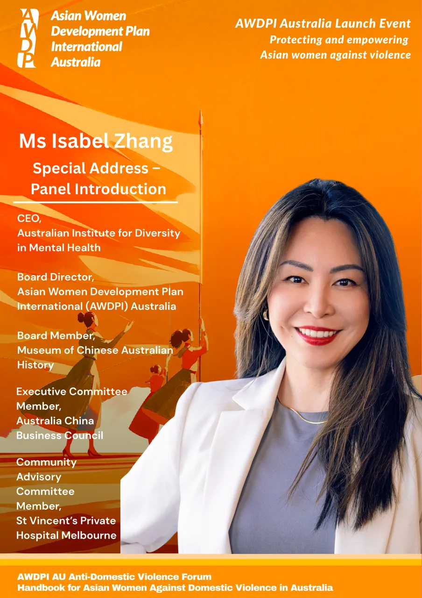
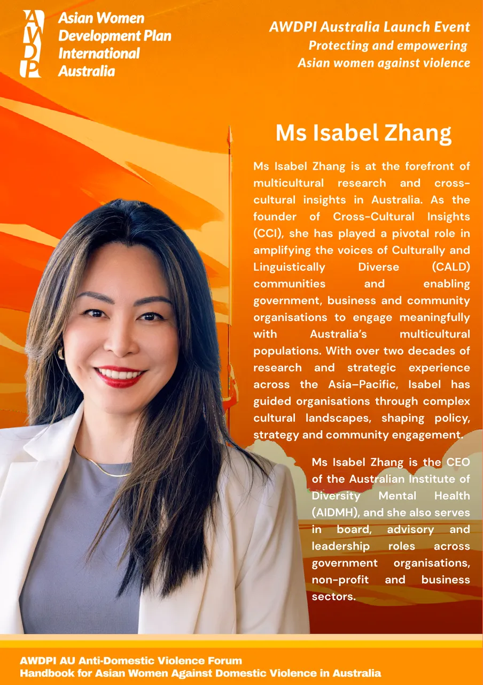
反家暴圆桌论坛
ANTI-VIOLENCE ROUNDTABLE DISCUSSION
「圆桌嘉宾 Dr Anne Pang」
Anne Pang自我防卫体系创始人及教练
亚裔女性国际发展计划（AWDPI）澳大利亚专家顾问
Anne Pang自 1990 年创立个人防护体系以来，已投入逾三十年时间教授女性自我防卫课程，持续赋能女性、提升安全意识。她曾在众多中学与大学教授课程，影响成千上万的女性，并多次赢得武术比赛冠军，包括澳大拉西亚功夫锦标赛。凭借杰出贡献，她于 1988 年成为唯一入选《Blitz Magazine》武术名人堂的女性自卫教练，并于 2023 年成为唯一获得澳大利亚武术大师奖（Martial Arts Australia Masters Award – Kung Fu）的女性。Anne于 2009 年在莫纳什大学完成亚洲研究博士学位，其博士论文以中英双语出版，并被全球 16 所顶尖大学收藏。作为 1970 年首位从台湾移民至澳大利亚的人，她始终热心协助新移民，并积极投身华人及澳大利亚社区服务，倡导性别与族裔平等。例如，她曾参与 AFL 多元文化焦点小组（Multicultural Focus Group），在澳中两地之间发挥文化桥梁的作用。她的工作融合教育、武术、研究与跨文化倡导，持续为建设更安全、更公平的社区贡献力量。
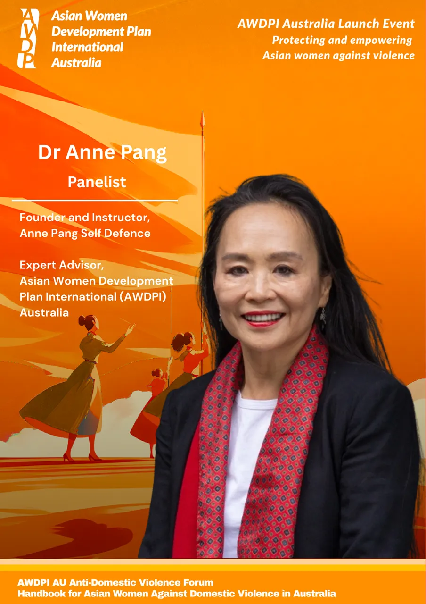
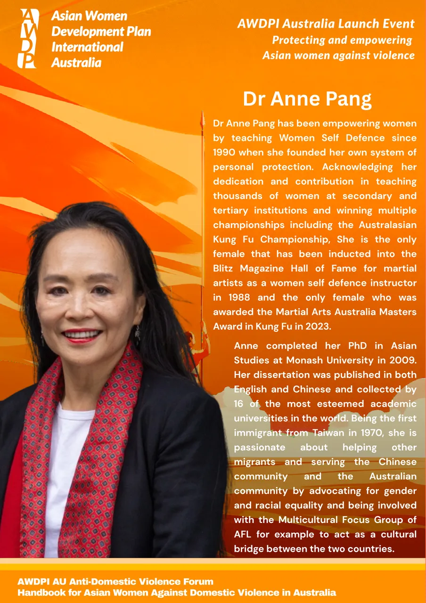
「圆桌嘉宾 Dr Sabi Kaphle」
澳大利亚昆士兰大学公共卫生高级讲师
多元文化女性反家庭暴力联盟创始主席及执行委员
Sabi Kaphle在国际健康与社区发展领域拥有超过二十年的工作经验，是集实务工作者、研究者与高校学者于一身的跨领域专业人士。她特别关注在资源匮乏与弱势社区环境中实施具文化安全性、有效且可持续的健康与社会干预措施。她长期与多元文化人群及广泛的利益相关方合作，参与从项目规划、服务提供到政策制定等多个层级的工作，其足迹横跨联合国体系到基层社区组织。Sabi Kaphle在性别平等、健康及文化安全领域发表了大量研究成果，并于 2022 年在 Routledge 出版专著《南亚分娩的社会文化洞见》。她近期主编的作品《移民中的关怀社群》（Communities of Care in Migration）呈现了来自不同国家的移民女性故事。Sabi Kaphle博士曾在多个机构担任董事，包括北部女性健康机构（Women’s Health In the North）及 CALD Communities Voices。作为多元文化女性反家庭暴力联盟的创始主席及现任执行委员，她持续推动为多元文化女性建立更安全、更有支持性的社会环境。
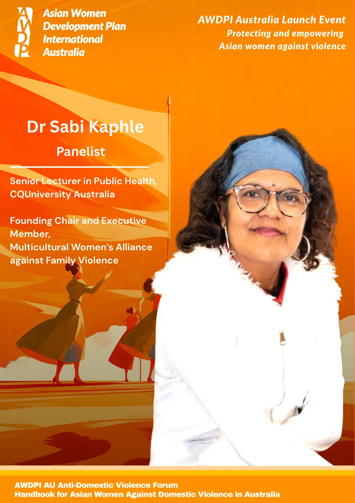
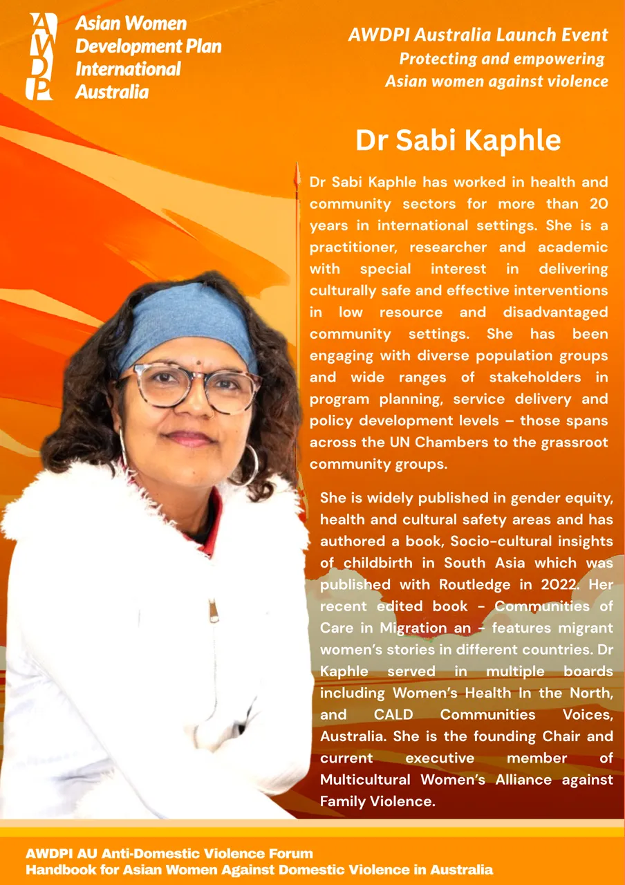
「圆桌嘉宾 Ms Ruyan Tao」
Harry R Song and Associates 律师事务所律师
Ruyan Tao现于 Harry R Song and Associates 律师事务所从事综合法律业务。她的专业实践涵盖商业与合同法、遗嘱与遗产规划、纠纷解决、诉讼事务，以及家庭暴力干预令等多项领域。进入法律行业前，她在私营企业累积了五年以上会计与金融工作经验，这也使她能够以更具商业思维的方式分析与处理法律问题。Ruyan致力于提供以客户为中心、专业稳健的法律服务，尤其强调在复杂事务中提供清晰、务实的法律建议。她拥有莫纳什大学商业学学士（金融与计量经济）及法律博士（Juris Doctor）学位，并于 2024 年 9 月正式取得维多利亚州法律执业资格。
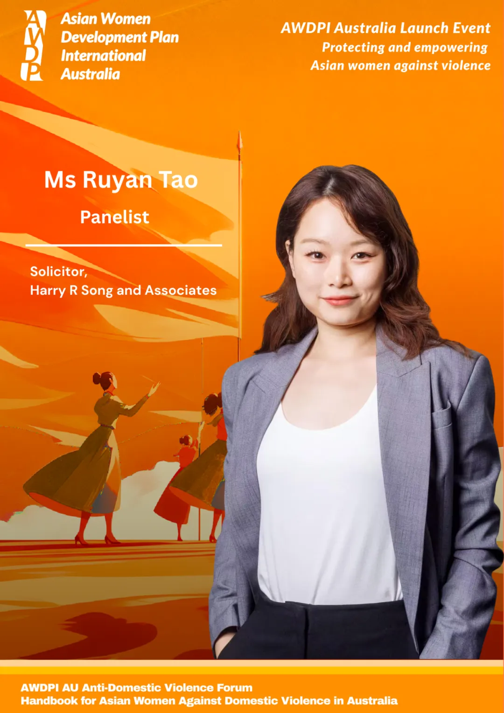
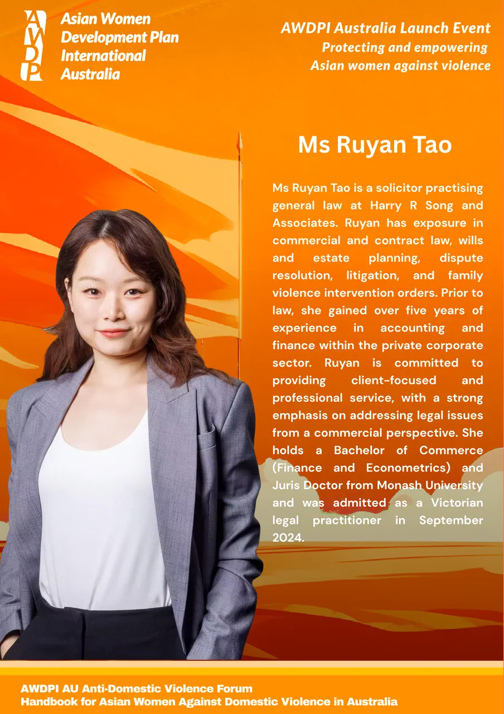
维州警察代表（Victoria Police）
Acting Sergeant Rajesh (Raj) Sambamurthy
代理警长Rajesh (Raj) Sambamurthy
Leading Senior Constable Andrew Kennedy
首席高级警员Andrew Kennedy
邀请您共同参与：
为亚裔女性打造更安全的未来
亚裔女性在澳大利亚的社区、经济与文化中发挥着不可替代的作用。然而在面临家庭暴力或求助时，她们往往承受着语言、文化、签证与社区压力等多重障碍，使得求助之路更加复杂而艰难。
AWDPI Australia 的成立，旨在弥补这些看不见的缺口，让支持更可获得、让信息更透明、让更多声音被看见，也让每一位女性在关键时刻能够感受到：安全、有力量、有选择。
欢迎您成为这项共同努力的一部分。
共同推动改变，从今天开始。
撰稿｜Cindy Jiaze Gui
海报&封面｜Cindy Jiaze Gui
排版｜池一诺